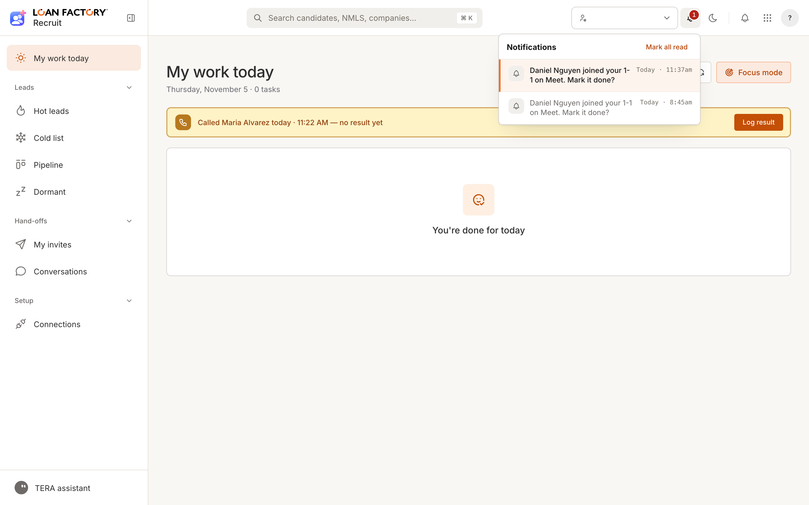
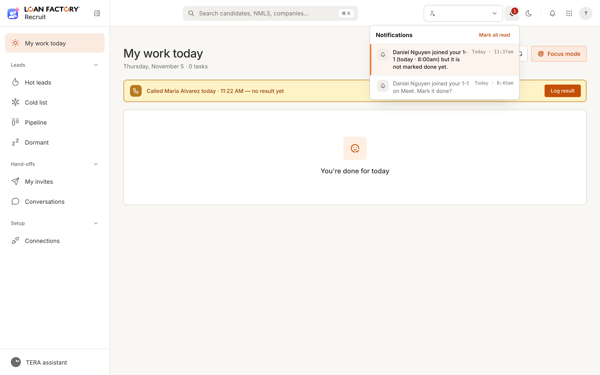
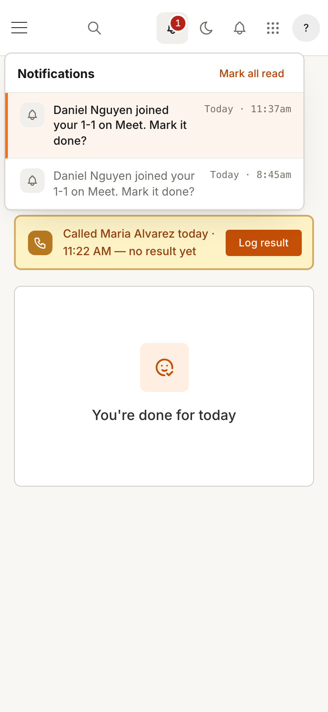
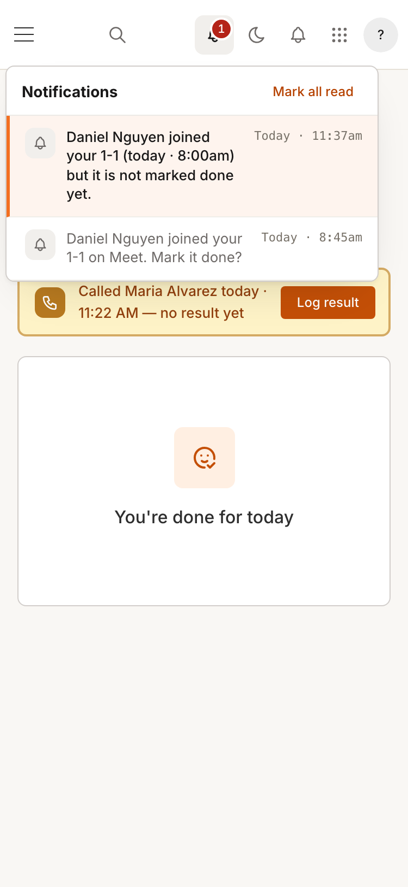
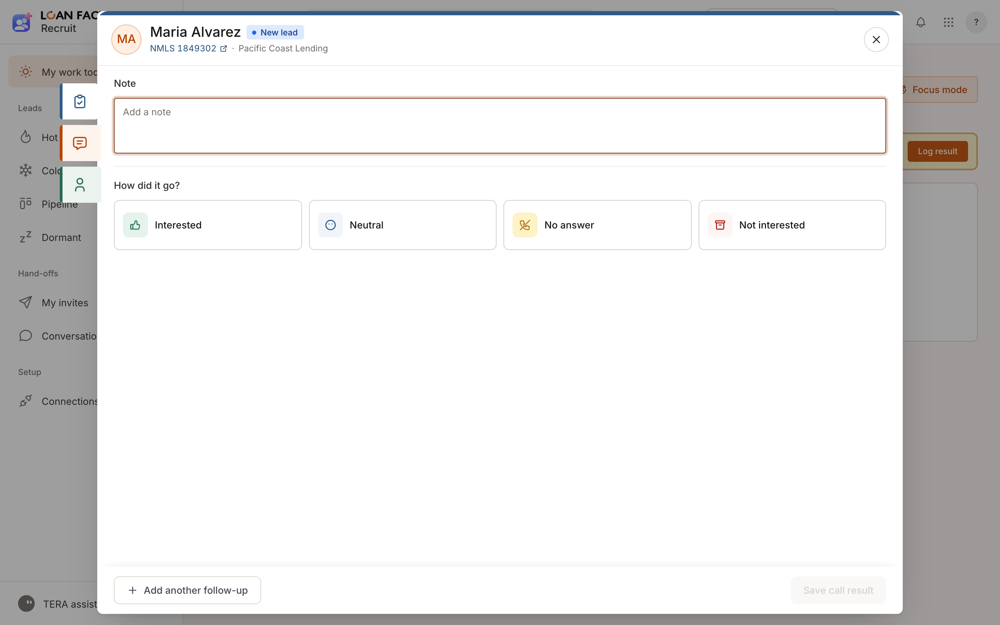
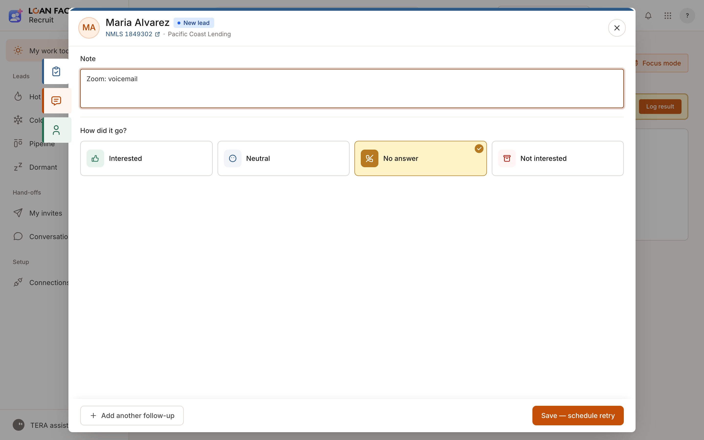
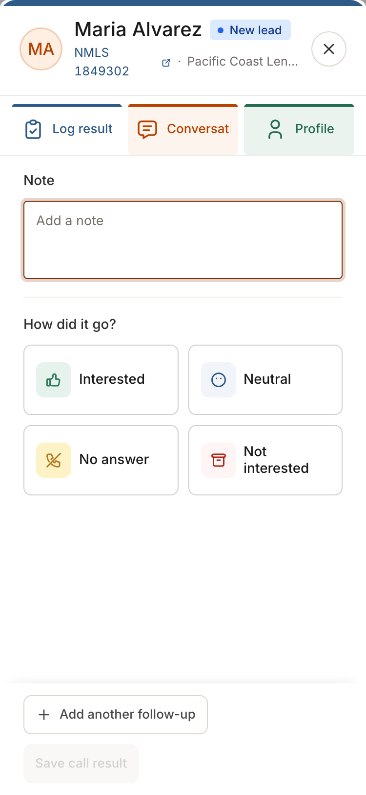
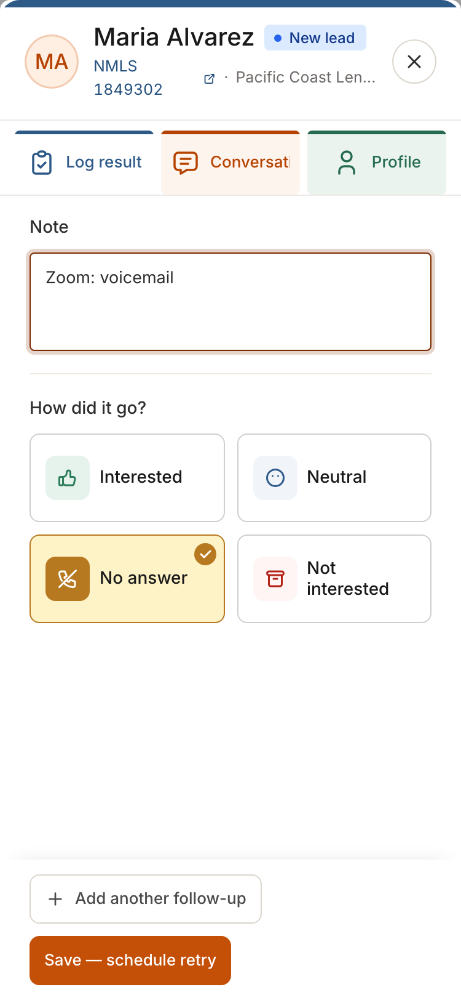

<title>Recruit staging review đêm</title>
<meta name="claude:viewport-fit-sides" content="cover">
<link rel="stylesheet" href="https://fonts.googleapis.com/css2?family=Inter:wght@400;500&family=IBM+Plex+Mono:wght@400&display=swap">
<style>
/* Layout: one column of before/after pairs, each pair side by side on wide screens, stacked on phones. */
:root {
  --bg: #f9f7f4; --surface: #ffffff; --fg: #23201c; --muted: #6b645b; --line: #e6e0d8;
  --accent: #c44f06; --before: #9a3412; --after: #166534; --chip: #f1ece5;
  --sans: "Inter", system-ui, -apple-system, "Segoe UI", sans-serif;
  --mono: "IBM Plex Mono", ui-monospace, Menlo, monospace;
}
@media (prefers-color-scheme: dark) { :root:not([data-theme="light"]) {
  --bg: #171513; --surface: #201d1a; --fg: #ece7e1; --muted: #a39b91; --line: #34302b;
  --accent: #f08a4b; --before: #f19a7a; --after: #7fd19b; --chip: #2a2622; color-scheme: dark } }
:root[data-theme="dark"] {
  --bg: #171513; --surface: #201d1a; --fg: #ece7e1; --muted: #a39b91; --line: #34302b;
  --accent: #f08a4b; --before: #f19a7a; --after: #7fd19b; --chip: #2a2622; color-scheme: dark }
body { background: var(--bg); color: var(--fg); font-family: var(--sans); font-size: 15px; line-height: 1.55;
  padding-left: max(16px, env(safe-area-inset-left, 0px)); padding-right: max(16px, env(safe-area-inset-right, 0px)); }
main { max-width: 1180px; margin: 0 auto; padding-block: 32px 64px; display: grid; gap: 48px; }
header { display: grid; gap: 8px; }
h1 { font-weight: 500; font-size: 26px; margin: 0; text-wrap: balance; }
h2 { font-weight: 500; font-size: 20px; margin: 0; text-wrap: balance; }
h3 { font-weight: 500; font-size: 15px; margin: 0; }
p { margin: 0; max-width: 68ch; }
.meta { color: var(--muted); font-size: 13px; }
.mono { font-family: var(--mono); font-size: 12.5px; }
section { display: grid; gap: 16px; padding-top: 24px; border-top: 1px solid var(--line); }
.status { display: inline-flex; gap: 8px; flex-wrap: wrap; }
.chip { background: var(--chip); border-radius: 4px; padding: 2px 8px; font-size: 12.5px; }
.chip.ok { color: var(--after); }
.pair { display: grid; grid-template-columns: 1fr 1fr; gap: 16px; }
.pair.phone { grid-template-columns: repeat(2, minmax(0, 320px)); }
figure { margin: 0; display: grid; gap: 8px; min-width: 0; }
figure img { width: 100%; border: 1px solid var(--line); border-radius: 4px; background: var(--surface); }
figcaption { font-size: 13px; color: var(--muted); }
.tag { font-size: 11px; letter-spacing: .06em; text-transform: uppercase; font-weight: 500; }
.tag.b { color: var(--before); } .tag.a { color: var(--after); }
ul { margin: 0; padding-left: 20px; display: grid; gap: 4px; max-width: 72ch; }
.ask { background: var(--surface); border: 1px solid var(--line); border-radius: 6px; padding: 16px; display: grid; gap: 8px; }
@media (max-width: 720px) { .pair, .pair.phone { grid-template-columns: 1fr; } }
</style>
<main>
  <header>
    <h1>Recruit staging review 05/11 (đêm)</h1>
    <p class="meta">Hai thay đổi giao diện cuối của lô CEO, đã lên STAGING lúc 02:37 05/11; prod chưa. Ảnh "trước" chụp trên FE ba33e8fa, ảnh "sau" trên FE 27d37c66, dữ liệu giả lập (không đụng dữ liệu thật).</p>
  </header>

  <section>
    <h2>1. Chuông nhắc lại khi buổi 1-1 Meet chưa được đánh dấu xong</h2>
    <div class="status"><span class="chip">recruit-be #841 (D379)</span><span class="chip">recruit-fe #694</span><span class="chip ok">STAGING</span><span class="chip">bead b4hpa.2</span></div>
    <p>Khi Meet cho biết Loan Officer đã vào buổi 1-1 mà người phụ trách onboarding chưa bấm Done, sau 2 giờ làm việc hệ thống rung thêm MỘT chuông. Không tự đánh dấu Done (Done vẫn cần chọn W-2/1099). Trước đây chuông nhắc lại dùng y câu của chuông đầu nên trông như bị trùng.</p>
    <h3>Máy tính (1440)</h3>
    <div class="pair">
      <figure><span class="tag b">Trước</span><figcaption>Chuông nhắc lại lặp đúng câu chuông đầu: "… joined your 1-1 on Meet. Mark it done?"</figcaption></figure>
      <figure><span class="tag a">Sau</span><figcaption>"Daniel Nguyen joined your 1-1 (today · 8:00am) but it is not marked done yet." Bản tiếng Việt: "… đã vào buổi 1-1 (…) nhưng chưa được đánh dấu xong."</figcaption></figure>
    </div>
    <h3>Điện thoại (375)</h3>
    <div class="pair phone">
      <figure><span class="tag b">Trước</span><figcaption>Trước.</figcaption></figure>
      <figure><span class="tag a">Sau</span><figcaption>Sau.</figcaption></figure>
    </div>
    <ul>
      <li>Giờ trong ngoặc là giờ hẹn của buổi 1-1, không phải giờ Loan Officer vào.</li>
      <li>Câu mới này hiện ở chuông riêng của Recruit (prod đang dùng chuông này). Staging đang bật chuông chung của platform; ở đó cả chuông Meet cũ lẫn chuông nhắc lại chỉ hiện "Update about {tên}", tình trạng có từ trước. Em đã tạo việc riêng: bead b4hpa.6.</li>
      <li>Prod: tính năng này không có cờ riêng, chạy theo cờ Meet attendance đang BẬT trên prod. Em đã dặn người đẩy prod giữ lại commit này tới khi anh duyệt.</li>
    </ul>
  </section>

  <section>
    <h2>2. Form "Log result" tự điền khi Zoom báo không ai nghe máy</h2>
    <div class="status"><span class="chip">recruit-be #842 (D378)</span><span class="chip">recruit-fe #693</span><span class="chip ok">STAGING</span><span class="chip">bead b4hpa.5</span><span class="chip">prod cờ TẮT</span></div>
    <p>Cuộc gọi Zoom bị nhỡ (MISSED) thì Recruit tự ghi "No answer", không cần mở form. Hộp thư thoại hoặc Zoom không báo kết quả thì chỉ điền sẵn form, người gọi vẫn bấm Lưu.</p>
    <h3>Máy tính (1440), ví dụ Zoom báo hộp thư thoại</h3>
    <div class="pair">
      <figure><span class="tag b">Trước</span><figcaption>Form trống, nút Lưu xám.</figcaption></figure>
      <figure><span class="tag a">Sau</span><figcaption>Đã chọn sẵn "No answer", ghi chú "Zoom: voicemail", nút "Save — schedule retry" bấm được.</figcaption></figure>
    </div>
    <h3>Điện thoại (375)</h3>
    <div class="pair phone">
      <figure><span class="tag b">Trước</span><figcaption>Trước.</figcaption></figure>
      <figure><span class="tag a">Sau</span><figcaption>Sau.</figcaption></figure>
    </div>
    <ul>
      <li>Chỉ điền vào form chưa ai đụng tới; bản nháp đã lưu vẫn được ưu tiên.</li>
      <li>Trên điện thoại, phần đầu form bị xuống dòng xấu (NMLS, tên công ty). Lỗi này có từ trước, không do thay đổi này.</li>
      <li>Chưa thấy chạy thật trên staging vì từ lúc deploy chưa có cuộc gọi Zoom nào; phần này đã có test tự động.</li>
    </ul>
  </section>

  <section>
    <h2>Anh cần làm</h2>
    <div class="ask">
      <p>Xem ảnh, chỗ nào chưa ổn thì nói em sửa. Nếu tiện, gọi thử một cuộc Zoom tới một số không nghe máy trên staging để thấy "No answer" tự ghi (khoảng 3 phút).</p>
      <p class="meta">Lên prod khi anh duyệt. Riêng chuông nhắc lại Meet: lên prod là bật luôn, vì không có cờ riêng.</p>
    </div>
  </section>
</main>
